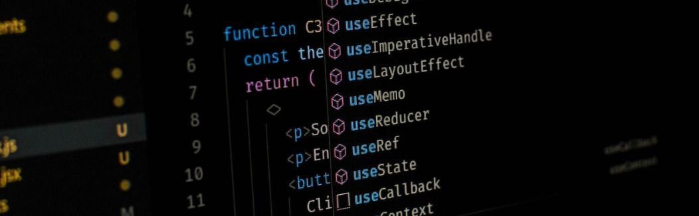
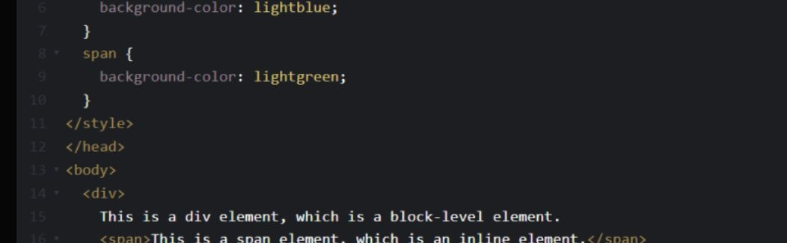
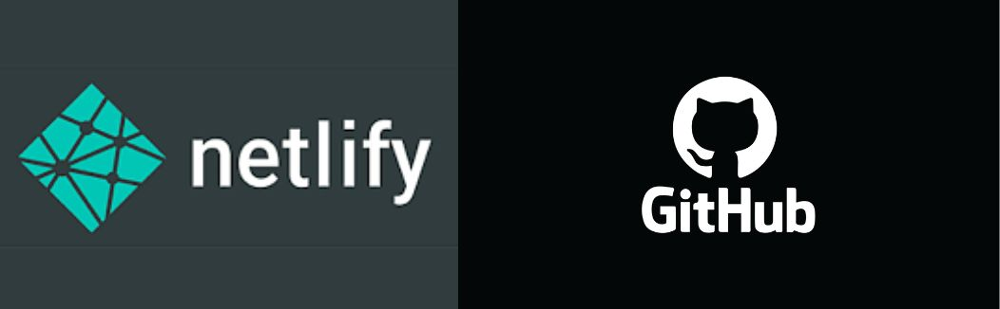

Clase 1
Hoy ha sido un día emocionante! Después de un largo receso, finalmente tuve mi primera clase en el laboratorio 1 y debo decir que fue simplemente increíble. La particularidad de esta vez es que la clase fue online, pero eso no le restó ni un ápice de emoción. Lo más emocionante fue descubrir que tendríamos al mismo profesor que el año pasado. ¡Y vaya que es un crack en programación! Recuerdo lo mucho que aprendí con él y estoy ansiosa por sumergirme nuevamente en sus conocimientos y experiencia. La clase comenzó con un repaso de algunos conceptos teóricos, pero rápidamente nos sumergimos en la práctica. ¡Aprendimos sobre HTML! Fue como abrir una puerta hacia un nuevo mundo de posibilidades. Desde los conceptos básicos hasta algunos trucos más avanzados, cada línea de código que escribíamos se sentía como un pequeño triunfo. Y para hacer las cosas aún más emocionantes, utilizamos Visual Studio Code, una herramienta que siempre me ha fascinado. Poder ver en tiempo real cómo se desarrolla mi código, con todas las sugerencias y ayudas que ofrece esta plataforma, fue simplemente genial. El tiempo pasó volando y, antes de darme cuenta, la clase llegó a su fin. Pero el entusiasmo y la energía que sentí durante toda la sesión permanecen conmigo. Estoy más que lista para lo que viene en las próximas clases. Hoy fue solo el comienzo, pero puedo sentir que este semestre promete ser increíble. Estoy lista para sumergirme en el maravilloso mundo de la programación una vez más. Hasta la próxima, querido diario. ¡A programar se ha dicho!
Clase 2
La clase de hoy fue simplemente fascinante! Después del emocionante inicio que tuvimos ayer, estaba ansiosa por sumergirme aún más en el mundo de la programación y la creación de contenido para mi blog, que ya considero como mi querido diario digital. Comenzamos revisando lo que aprendimos en la clase anterior sobre HTML. Fue genial poder repasar y reforzar esos conceptos, asegurándome de tener una base sólida antes de adentrarnos en territorios más desafiantes. Además, el profesor profundizó un poco más en la teoría, explicando algunos conceptos avanzados que me dejaron maravillada. A medida que escribo estas líneas, mi mente está llena de ideas sobre cómo puedo utilizar estas nuevas habilidades para hacer mi blog aún más interesante y atractivo para mis lectores. Estoy emocionada por explorar todas las posibilidades y ver hasta dónde puedo llegar con mi creatividad. Hoy ha sido otro día emocionante en el laboratorio 1. Estoy agradecida por tener la oportunidad de aprender de un profesor tan talentoso y apasionado, y estoy ansiosa por ver qué más nos espera en las próximas clases. Hasta pronto, querido diario.¡A seguir creando!
Clase 3
En la clase de laboratorio de hoy, aprendimos sobre la aplicación de estilos como cursiva y negrita en páginas web, así como técnicas para controlar el espaciado con etiquetas HTML y propiedades CSS. Fue emocionante ver cómo pequeños ajustes pueden mejorar significativamente la apariencia y legibilidad de nuestras páginas. Estoy entusiasmado por aplicar estos conocimientos en nuestros proyectos futuros.
Clase 4
En la clase 4, revisamos las páginas web de todos los estudiantes y el profesor nos brindó feedback detallado. Fue una oportunidad invaluable para mejorar nuestras habilidades de diseño y desarrollo web. El intercambio de comentarios nos ayudó a comprender mejor cómo optimizar nuestras páginas para una experiencia de usuario óptima.
Clase 5
martes 2 de abril en la clase 5 en el laboratorio, exploramos los atributos en HTML, comprendiendo el propósito de elementos como div y span. Aprendimos también cómo incrustar videos en nuestras páginas web, controlando su inicio y finalización con precisión en los segundos deseados. Fue una sesión enriquecedora que amplió mi comprensión de la creación de contenido multimedia en la web.
Clase 6
Hoy, miércoles 7 de abril, aprendimos sobre CSS en clase. Exploramos propiedades como background-color, font-family, font size, font-weight y text transform. Fue una sesión informativa pero emocionante, con mucho por procesar pero gratificante en términos de aprendizaje.
Clase 7
Hoy, miércoles 6 de abril, aprendimos sobre lab, subititulos en clase. y que es un hosting y un dominio. Exploramos el fascinante mundo del hosting y dominios. Me encantó sumergirme en este tema, aunque quedé intrigadoa por lo que profundizaremos en la próxima clase. Estoy ansiosoa por seguir aprendiendo más sobre cómo estos elementos son clave en la creación de sitios web.
Clase 8
Hoy descubrí y Netlify en clase. GitHub es una plataforma para alojar proyectos de desarrollo colaborativo utilizando el control de versiones Git. Netlify, por otro lado, es una plataforma de alojamiento y despliegue que permite publicar sitios web estáticos de forma rápida y sencilla. Después de recibir feedback del profesor, finalmente logré entender cómo usar Netlify y ahora puedo compartir mis proyectos con un simple enlace. Además, pude ayudar a dos compañeras con los consejos que recibí. ¡Gracias, profesor, por tu orientación!